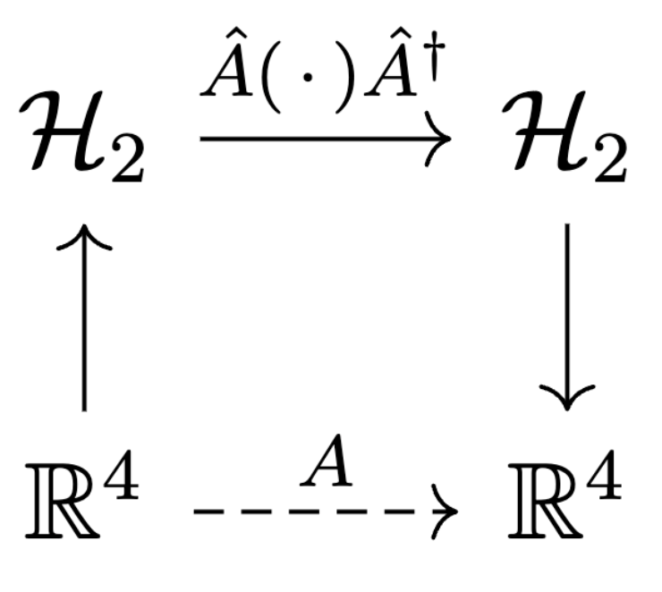

5 Spacetime geometry
We introduce the Minkowski metric and the Lorentz group, and show that the algebra is neatly represented by \(2\times 2\) complex matrices.
Key takeaways:
- The Pauli matrices form a basis for \(2\times 2\) complex Hermitian matrices (proposition 5.2).
- Representation of \((3+1)\)-spacetime using Hermitian-matrixs (definition 5.2).
- In this representation, determinant (of the \(2\times 2\) Hermitian matrix) correspond to the Minkowski norm in \(\mathbb R^4\) (proposition 5.3).
- Conjugation in the representation corresponds to a linear transformation in spacetime (theorem 5.1).
- We are interested in the Lorentz group (definition 5.4) which preserve the Minkowski norm. Such (linear) Lorentz transforms are represented the conjugate action of \(\mathrm{SL}(2, \mathbb C)\), or \(2\times 2\) complex matrices with determinant 1 (proposition 5.4).
In this section, we work with \(2\times 2\) complex matrices. Some terminology for reference:
- \(\mathrm{GL}(2, \mathbb C)\) denotes the set of \(2\times 2\) complex invertible matrices.
- \(\mathrm{SL}(2, \mathbb C)\subsetneq \mathrm{SL}(2, \mathbb C)\) denotes the set of \(2\times 2\) matrices with \(\det A=1\).
- \(U(2)\) denotes the set of \(2\times 2\) unitary matrices satisfying \(AA^\dagger= A^\dagger A = \mathbf 1\). The intersection \(U(2)\cap \mathrm{SL}(2, \mathbb C)\) is denoted \(SU(2)\), or the special unitary group.
- \(\mathcal H_2\) denotes the set of \(2\times 2\) Hermitian matrices satisfying \(A^\dagger= A\), where \(A^\dagger\) is the conjugate transpose.
Matrix representation of spacetime
In this section, we define a representation of spacetime via a bijection between \(\mathbb R^4\) and \(\mathcal H_2\) (definition 5.2) and introduce the Minkowski metric 5.3. the space \(\mathbb R^4\cong \mathbb R\times \mathbb R^3\) will be understood as \(4\)-dimensional spacetime.
Both unitary matrices and Hermitian matrices are normal thus subject to the spectral theorem, so one may think of them as a diagonal matrix of eigenvalues in some orthonormal basis. In particular:
- Hermitian matrices have real eigenvalues.
- Unitary matrices have complex eigenvalues with unit norm of the form \(e^{i\theta}\).
An immediate corollary of the observation above is
Proposition 5.1 Every unitary \(U=\exp(iH)\) is the complex exponential of some Hermitian matrix \(H\).
Proceeding, recall the Pauli matrices \[ \mathbf 1 = \begin{bmatrix} 1 \\ & 1\end{bmatrix}, \quad \sigma_x = \begin{bmatrix} & 1 \\ 1 \end{bmatrix}, \quad \sigma_y = \begin{bmatrix} & -i \\ i \end{bmatrix}, \quad \sigma_z = \begin{bmatrix} 1 \\ & -1\end{bmatrix} \] The space \(\mathcal H_2\) of \(2\times 2\) Hermitian matrices is a vector space, and it comes equipped with the following inner product:
Definition 5.1 (Hilbert-Schmidt inner product) The Hilbert-Schmidt inner product defined on the space of linear operators
over a finite-dimensional Hilbert space of dimension \(d\) is
\[
\langle A, B\rangle= \dfrac 1 d \mathrm{Tr}(A^\dagger B)
\]
In a basis representation, this corresponds to the flattened vector inner product.
The Pauli matrices are special because they form an orthonormal basis for \(\mathcal H_2\):
Proposition 5.2 The Pauli matrices are involutary \(\sigma_i^2 = \mathbf 1\) and form an orthonormal basis for \(\mathcal H_2\) under the Hilbert-Schmidt inner product.
Proof: Direct computation, one can verify.
Definition 5.2 (representation of spacetime) We identify points in \(\mathbb R^4\)
\[
x=(x_t, x_1, x_2, x_3)\in \mathbb R^4
\]
with \(2\times 2\) Hermitian matrices
\[
\hat x
= x_t\mathbf 1 + x_1\sigma_x + x_2\sigma_y + x_3\sigma_3 =
\begin{bmatrix} x_t + x_3 & x_1 - i x_2 \\ x_1 + ix_2 & x_t - x_3
\end{bmatrix}\in \mathcal H_2
\]
The representation is invertible by Fourier
decomposition onto the Pauli basis using 5.1:
\[
x_t = \langle\hat x, \mathbf 1\rangle= \dfrac 1 2 \mathrm{tr}(\hat x\mathbf 1), \quad
x_{i\in \{1, 2, 3\}} = \langle\hat x, \sigma_i\rangle= \dfrac 1 2 \mathrm{tr}(\hat x\sigma_i)
\]
Definition 5.3 (Minkowski metric) The Minkowski metric over \(\mathbb R^4\) is the bilinear map \(\langle\, \cdot\, , \, \cdot\, \rangle_M:\mathbb R^4\times \mathbb R^4\to \mathbb R\). \[ \langle x, y\rangle_M = x_ty_t - x_1y_1 - x_2y_2 - x_3y_3 \] We denote the Minkowski norm it induces by \(\|\, \cdot\|^2_M:\mathbb R^4\to \mathbb R\), defined by \(\|x\|_M^2 = \langle x, x\rangle_M\).
One purpose of the definition 5.2 is the following
Proposition 5.3 Under the Pauli identification of \(\mathbb R^4\) \[ \det \hat x = \langle x, x\rangle_M \]
Proof: Direct computation: \(\det \hat x = x_t^2 - x_1^2 - x_2^2 - x_3^2\).
The Lorentz group
We wish to investigate linear transformations on \(\mathbb R^4\) which leave the Minkowski metric invariant, since these transformations form the Lorentz group.
Definition 5.4 (Lorentz group) The Lorentz group \(\mathcal L\) is the subgroup of \(\mathrm{GL}(4, \mathbb R)\) (group of invertible linear transformations on \(\mathbb R^4\)) which preserve the Minkowski metric \[ A\in \mathcal L\iff \forall x, y\in \mathbb R^4, \langle x, y\rangle_M = \langle Ax, Ay\rangle \iff \forall x\in \mathbb R^4, \|x\|^2_M = \|Ax\|^2_M \]
Recall that inverse-conjugating any matrix \(A\mapsto BAB^{-1}\) will not change the eigenvalues of \(A\). In particular, inverse-conjugating \(\hat x\in \mathcal H_2\) by any \(2\times 2\) invertible matrix yields another element of \(\mathcal H_2\); since \(\mathcal H_2\) represent points in spacetime, it is natural to ask the \(H\mapsto BHB^{-1}\) induces on \(\mathbb R^4\).
Theorem 5.1 (conjugation-induced linear transform) conjugation in \(\mathcal H_2\) yields a linear transformation in \(\mathbb R^4\): Equivalently, the map \(A:\mathbb R^4\to \mathbb R^4\) which makes the diagram below commute is a linear operator.
 In particular, the representation of \(\hat A\) as a matrix in \(\mathbb R^4\) is \[ A_{ij} = (Ae_j)_i = \langle\hat A \sigma_j \hat A^\dagger, \sigma_i \rangle = \dfrac 1 2 \mathrm{tr}\left(\hat A \sigma_j \hat A^\dagger\sigma_i\right) \tag{5.1} \]
Proof: Fixing \(\hat A:\mathcal C^2\to \mathcal C^2\) and let \(x, y\in \mathbb R^4\). Let \(\sigma_i\) be any Pauli basis matrix, we show that \(A\) is linear: \[\begin{align} \left[A(x+\alpha y)\right]_i &= \langle\hat A(\hat x + \alpha \hat y)\hat A^\dagger, \sigma_i\rangle = \dfrac 1 2 \mathrm{tr}\left(\hat A (\hat x + \alpha \hat y)\hat A^\dagger\sigma_i \right) \\ &= \dfrac 1 2 \mathrm{tr}\left(\hat A \hat x \hat A^\dagger\sigma_i \right) + \dfrac 1 2 \alpha \mathrm{tr}\left(\hat A \hat x \hat A^\dagger\sigma_i \right) = (Ax)_i + \alpha(Ay)_i \end{align}\]
We are interested in the Lorentz group, i.e. induced transformations \(A:\mathbb R^4\to \mathbb R^4\) which preserve the Minkowski metric. The relation between Minkowski norm and determinant of the Pauli identification in proposition 5.3 gives a convenient characterization.
Proposition 5.4 Conjugation by \(\hat A:\mathbb C^2\to \mathbb C^2\) induce a Lorentz transformation only if \[ \det \hat A = \pm 1 \] Moreover, \(\hat A\) induces the same transformation as \(-\hat A\), so without of loss of generality we can take \(\det \hat A = 1\).
Proof: Use proposition 5.3: \(\|Ax\|^2_M = \det(\hat A\hat x\hat A^\dagger) = \det \hat x (\det A)^2 = (\det A)^2 \|x\|^2_M\)
Within \(\mathrm{SL}(2, \mathbb C)\), the special unitary group \(\mathrm{SU}(2)\) consisting of \(2\times 2\) unitaries and the unit-determinant Hermitians \(\mathcal H_2\cap \mathrm{SL}(2, \mathbb C)\) are special: every \(A\in \mathrm{SL}(2, \mathbb C)\) may be decomposed into a unique product of \(U\in \mathrm{SU}(2)\) and \(H\in \mathcal H_2\cap \mathrm{SL}(2, \mathbb C)\).
Boosts and rotations
We explore \(\mathbb R^4\) transforms induced by the unitaries and unit-determinant Hermitians, beginning with the unitaries. Recall that every unitary \(U=\exp(iH)\) for some Hermitian \(H\). Since the Paulis form a basis, every unitary \(U\) may be written uniquely as \[ U=\exp\left[i(x_t \mathbf 1 + x_1\sigma_x + x_2\sigma_y + x_3\sigma_z)\right] = \exp\left[ix_t + i(x_1\sigma_x + x_2\sigma_y + x_3\sigma_z)\right] \] Inspecting equation (5.1) shows that the induced transformation is invariant in \(x_t\), and, in fact, an overall scaling of \((x_1, x_2, x_3)\). Without loss of generality we consider unitaries of the form \(U=\exp(i(\hat r\cdot \sigma))\), for \(r\in S^2\), the unit \(2\)-sphere in \(\mathbb R^3\).
Theorem 5.2 (unitaries induce spatial rotations) A clockwise rotation \(A\) in the last three spatial coordinates about \(\hat r\in S^2\) by \(\theta\) is induced via equation (5.1) by \[ U(\hat r, \theta) = \exp\left[-\dfrac i 2 \theta (\hat r\cdot \vec \sigma)\right] \in \mathrm{SU}(2) \]
Proof: All conjugation fixes the time axis since \(\mathbf 1\) commutes with everything so \(U(x_t\mathbf 1)U^\dagger= x_t\mathbf 1\). The only Minkowski-norm preserving isometries of \(\mathbb R^4\) which fix time are the spatial rotations. The direct form follows by direct computation or noting the identification with quaterions. We do one example here, let \[ \hat r = (0, 0, 1), \quad \hat R_z(\theta) = \exp\left(-\dfrac i 2 \theta\sigma_z\right) \implies R_z(\theta)_{ij} = \dfrac 1 2 \mathrm{tr}\left(\hat R_z(\theta)\sigma_j \hat R_z(-\theta)\sigma_i \right) \] If \(j=3\) (corresponding to spatial \(z\)) or \(j=0\) (time), \(\sigma_j\) commutes with \(\hat R_z(\theta)\) so \[ R_z(\theta)_{ij\notin\{0, 3\}}=\delta_{ij} \] This implies that \(R_z(\theta)\) acts trivially on the time and \(z\)-axes. Next, let us consider the subspaces spanned by \(\sigma_1, \sigma_2\). Recall that \([\sigma_3, \sigma_1] = -[\sigma_1, \sigma_3]\) \[\begin{align} R_z(\theta)_{11} &= \dfrac 1 2 \mathrm{tr}\left(e^{-i\theta \sigma_3/2}\sigma_1 e^{i\theta \sigma_3/2}\sigma_1 \right) \\ &= \dfrac 1 2 \mathrm{tr}\left(e^{-i\theta \sigma_3}\sigma_1\sigma_1 \right) = \dfrac 1 2 \mathrm{tr}\left(e^{-i\theta \sigma_3}\right) \\ &= \dfrac{e^{i\theta} + e^{-i\theta}} 2 = \cos\theta \end{align}\] The same applies to \(R_z(\theta)_{22}\) Continuing the calculation and remembering the commutation relation \(\sigma_i\sigma_j = i\epsilon_{ijk}\sigma_k\) \[\begin{align} R_z(\theta)_{12} &= \dfrac 1 2 \mathrm{tr}\left(e^{-i\theta \sigma_3/2}\sigma_1 e^{i\theta \sigma_3/2}\sigma_2 \right) \\ &= \dfrac 1 2 \mathrm{tr}\left(e^{-i\theta \sigma_3}\sigma_1\sigma_2 \right) = \dfrac 1 2 \mathrm{tr}\left(e^{-i\theta \sigma_3}i\sigma_3\right) \\ &= \dfrac{ie^{i\theta} - ie^{-i\theta}} 2 = \dfrac{e^{-i\theta}-e^{i\theta}}{2i} = -\sin\theta \end{align}\] Then \(R_z(\theta)\) restricted to the \(xy\) plane is a spatial rotation: \[ R_z(\theta)\big|_{xy} = \begin{bmatrix} \cos\theta & -\sin\theta \\ \sin\theta & \cos\theta \end{bmatrix} \]
We spend some time here to recall the hyperbolic functions. \[\begin{align} \cosh x &= \sinh'x = \dfrac{e^x + e^{-x}} 2 \\ \sinh x &= \cosh'x = \dfrac{e^x - e^{-x}} 2 \\ \sinh(x+y) &= \sinh x \cosh y + \cosh x \sinh y \\ \cosh(x+y) &= \cosh x \cosh y + \sinh x \sinh y \\ 1 &= \cosh^2 x - \sinh^2 x \end{align}\]
Theorem 5.3 (special Hermitians induce Lorentz boosts) Given \(\hat r\in S^2, \chi\in \mathbb R\), the following Hermitian induces a Lorentz boost in the direction of \(\hat r\in S^2\) by \(\chi\). \[ H(\hat r, \chi) = \exp \left[-\dfrac 1 2 \chi (\hat r\cdot \sigma)\right]\in \mathcal H_2 \]
Proof: explicit calculation. Given \(H(\hat r, \chi)\), compute the matrix elements of the linear transform of \(\mathbb R^4\) it corresponds to using equation (5.1); this turns out to be the Lorentz boost.